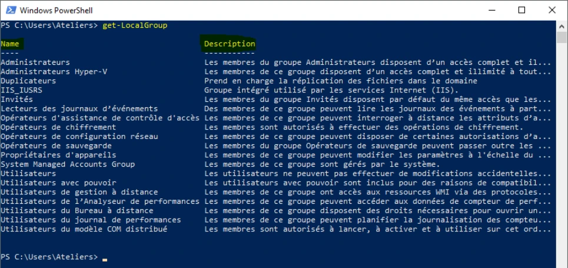
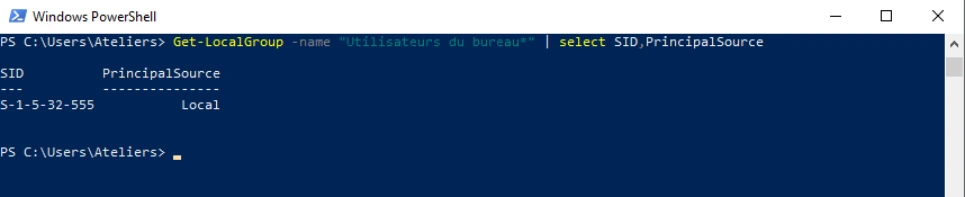

Transcription du document de formation. Les paragraphes, listes, tableaux et visuels isolés suivent l’ordre du document ; les aides pédagogiques sont séparées.
TP du Module 03 – Interagir avec Windows 10
Sur Win10-XX, recherchez les commandes adaptées pour les besoins suivants
Get-Command
Get-Command -CommandType Cmdlet
Get-Command -CommandType Cmdlet -Name Get-*
ou
Get-Command -Type Cmdlet Get-*
Get-LocalGroup
On peut trouver cette commande en faisant un Get-Command Get-*group*
Les deux propriétés sont Name et Description
Get-LocalGroup | select *
Il y a trois autres propriétés non affichées par défaut par le système : SID, PrincipalSource et ObjectClass
Get-LocalGroup -name "Utilisateurs du Bureau*" | Select SID,PrincipalSource


Sur Discovery, recherchez les commandes adaptées pour les besoins suivants
Get-Disk
La VM possède 4 disques durs
Get-Disk | select Number,Model
Pour la propriété Model, qui n'est pas une propriété affichée par défaut, nous pouvons la trouver en faisant la commande Get-Disk | select * en amont.
Get-Disk -Number 2 | Select FriendlyName,BusType,ManuFacturer
Nous pouvons trouver les propriétés Nom, type de bus et fabricant à l'aide de la commande Get-Disk | select * en amont.
Get-NetAdapter | select Name,Status,DriverDescription
Get-LocalGroupMember -Name "Administrateurs"
Ou
Get-LocalGroupMember Administrateurs
Get-LocalGroupMember -Name "Administrateurs" > C:\Users\AdminMembers.txt
pour vérifier la présence du fichier et de son contenu
Get-ChildItem c:\Users
pour lister le contenu du dossier C:\Users (AdminMembers.txt doit être présent)
Get-Content c:\Users\AdminMembers.txt
pour afficher le contenu du fichier texte à l'écran